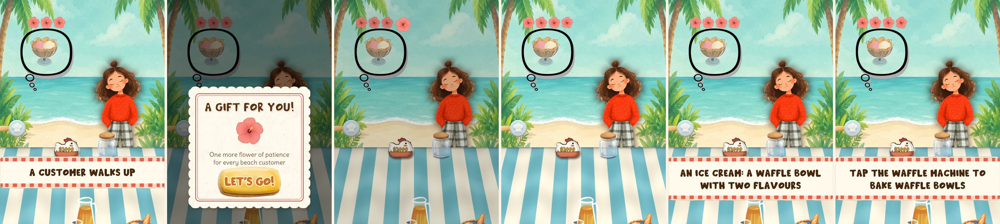
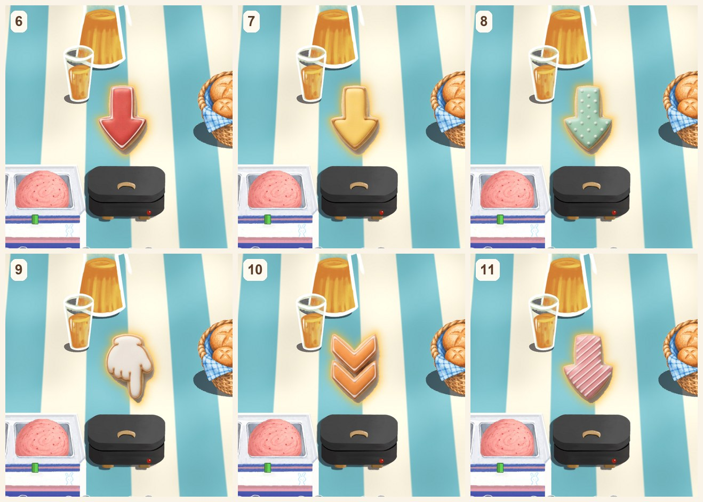
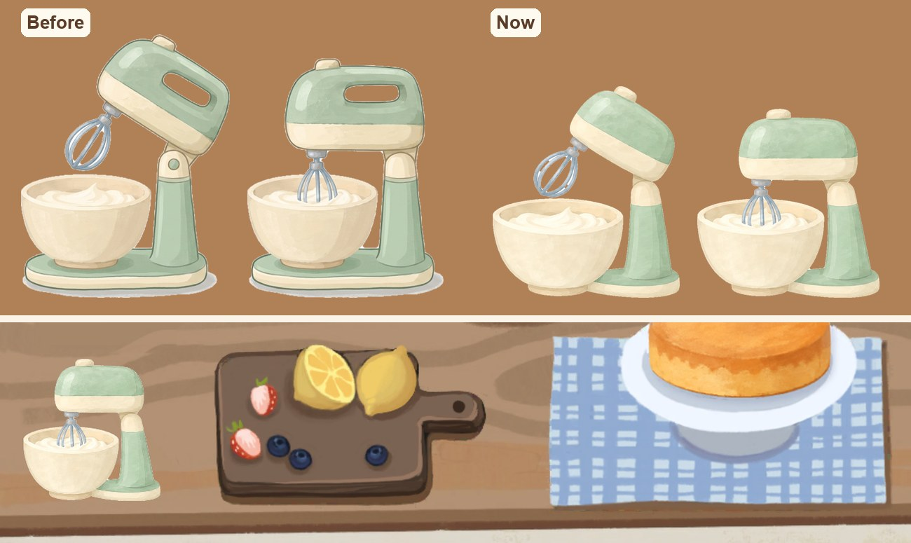
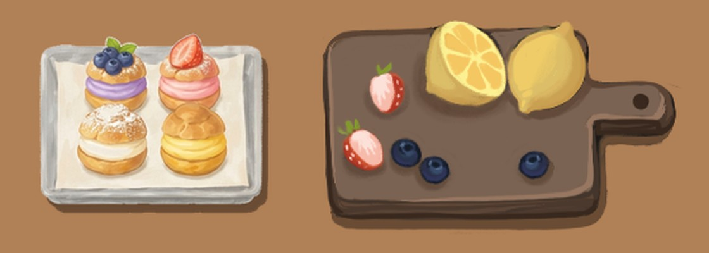

Food Truck Cafe
21 November. 2026.11.20 is live on the App Store; the next test build waits on the Xcode sign-in.
1Next
You
Pick a tutorial arrow (Current) and the chapter 2 ideas you want (Q&A).
Look at the chapter 2 gift (Current): the words on the card are mine, change them if you like.
MVP now lists everything changed since release 2026.11.20.
Test build: Xcode still has no Apple account sign-in. Open Xcode, Settings, Accounts, sign in (I cannot type your password) and tell me; I then build with today's changes and upload.
Me
Done today: chapter 2 gift (fourth flower), tray shadow, simpler mixer, kitchen cooks without pauses, faster blender, player analysis. After your picks: the arrow in the game, the chapter 2 tuning, the test build.
Tomorrow (22 Nov): Unity Ads and Apple sales for 21 Nov, to see why today's US player was shown no ad (Remove Ads bought, or ads not working in the new release).
2Q&A
Does the time of my test play match? Where is today's data from, when App Store Connect has none yet? (21 Nov)
- Yes, it matches. Your TestFlight play is in the test data: today 12:09 to 12:16, days 13 and 14, one star each, then the shop. It is kept apart from the players and never counted.
- So the 11:29 to 12:01 play was not you. It is a real new player in the US on the App Store copy: all 14 days in 32 minutes, 3 stars on every day, nearly everything bought. They are in the numbers now (Analysis).
- Where today's data comes from: Unity Analytics, not App Store Connect. The game itself sends its events (tutorial steps, days, stars, purchases, ads) to Unity within about a minute. App Store copies go to "production", TestFlight and my editor to "development". Apple's own numbers (downloads) come a day later; they end on 20 Nov.
Chapter 2 is much harder: ways to tune it (21 Nov)
- The data agrees. The player from Japan got mostly 3 stars in chapter 1; in chapter 2 they got 0 stars on day 13 and needed 2 to 5 tries on each of days 15 to 19. All 11 of their restarts were in chapter 2. Your own test today: one star on day 13 and on day 14. (Today's US player got 3 stars on both, so it can be done, but not by most.)
- Why: customers come at the same pace as chapter 1, but an ice cream is up to four taps, and the scoops and waffle bowls run out fast (4 scoops a well), so the kitchen trips pile up.
Ideas (tick any; my pick is 1, 2 and 3: make the ice cream lighter, leave the customers alone):
What are "Header" and "Search Results" on the release page? They are empty for our game.
- They are new, optional slots from Apple ("creative assets", shown from iOS 27): a picture or short looping video at the very top of our store page (Header), and a picture shown beside the game in search (Search Results).
- Empty is fine: the page looks as it does now, and search keeps showing our video and screenshots. Nothing is missing from the release.
- They are a chance to look better: one clear picture of the truck and the table, no prices, readable small. Apple gives templates with safe areas. They go through review like screenshots.
The sale price of each item
- Chapter 1: coffee $10, bread $15, apple $20, juice $20, cookies $30, strawberry cake $35 a slice, choux $35.
- Chapter 2: coconut $30, ice cream $15 per scoop (a three-scoop glass is $45).
- Plus a tip: price × seconds left on the order × 10 % (some customers tip more). A $30 order served with 6 seconds left pays $18 in tips.
- A replayed day pays only part of this (unchanged).
How long each kitchen item takes
- Ovens (changed 20 Nov): bread 5 s; choux, cake and cookies 3 s.
- Apples (chapter 1) and coconuts (chapter 2): the tree or palm grows them back 8 s after the last one is picked.
- Blender (ice cream refill): 3 s with four flavours, 1.8 s with two (changed 21 Nov; was 5 s and 2.8 s).
- Waffle machine: about 2.4 s (1.1 s of steam, then the lid opens and the bowls come out).
- Coffee bags and juice: no wait, a tap refills at once.
- With the Kitchen upgrade (15 stars) every wait above is a quarter shorter: bread 3.8 s, the others 2.3 s, apples and coconuts 6 s, blender 2.4 s, waffles 2.1 s.
3Current
Made 21 November; not in a test build yet.
Chapter 2's gift: one more patience flower.

- When: once, on chapter 2's first day, before the tutorial. The three flowers pop up, the fourth falls in with a pop and a burst of petals, then "Let's go" starts the tutorial.
- What it gives: every chapter 2 customer has four flowers. Each lasts as long as before, so they wait a third longer than in chapter 1 (until now it was 20 % longer on three flowers).
- A player already inside chapter 2 gets the four flowers too, without the card.
Tutorial arrow as a cookie, with a glow: five proposals.

- The cookie is the map's arrow cookie turned to point down, a third bigger than today's arrow. It keeps its bounce.
- The glow pulses. White is the kitchen's "tap me" glow; gold is the kitchen's "next step" glow and shows better on the pale cloth.
Kitchen: simpler, smaller mixer; no pauses; faster blender.

- Mixer: no handle opening, button or seam lines; the machine is about a third smaller; bowl and blade are the size they were. Both frames are in iCloud (mixer_rest, mixer_running).
- No pauses: after the oven the mixer starts at once, then the fruit board, then the dessert flies to the table. A choux or cake takes about 9 s from the oven tap with no further taps. If both need the mixer, the second waits its turn.
- Blender: 3 s with four flavours, 1.8 s with two (was 5 s and 2.8 s). The blade turns as before; only the run is shorter.
The baking tray has the fruit board's shadow.

- Measured on the board: the same flat brown, hard edge, set to the right and down. All four tray frames have it; they are in iCloud (choux_tray_...).
4MVP
Next release: the kitchen remodel and the small fixes. Everything changed since release 2026.11.20:
- Kitchen flow: choux and cake are made in steps. The oven bakes them onto the baking tray or the cake plate in the kitchen, the mixer adds the cream, the fruit board adds the fruit, then they fly to the table. The kitchen does every step by itself, with no pause.
- New kitchen pieces: the baking tray (four choux, two by two, four stages, with a shadow), the cake plate's stages (empty, sponge, cream, finished), the mixer set (at rest and running). All can be arranged; the tray starts on the kitchen table.
- Kitchen times: bread bakes 5 s; choux, cake and cookies 3 s. The ice cream blender runs 3 s (1.8 s with two flavours). Pausing the game stops the kitchen too.
- Chapter 2 opens after day 9 of chapter 1 (the player chooses when to go). On the map day 9 is a big glowing star with a dotted path to the arrow; finishing it gives a star and the truck drives to chapter 2.
- Chapter 2 gift: a fourth patience flower for every chapter 2 customer, shown on a reward card before the tutorial.
- Map: today's day card opens by itself.
- Customers: they think for 2 s (three dots in the bubble) before the order shows.
- Shop: NEW on a tab that holds something new; locked items stay visible with a padlock (cookies and coconut until chapter 2, the star Yoga until she is hired); two new locked star cards, Chef (20) and Dining table (25); cards aligned; the extra cup reads "One more plate for brewed coffee."
- Look: a taller hen on the table; the tutorial's "Ready to go?" card on paper with cookie buttons.
Not in yet: the tutorial arrow cookie and the chapter 2 tuning (your picks); the cutting animation (the board hops for now); a sound for the day 9 scene.
5Backlog
Nothing open.
6Analysis
Players, 19 to 21 November (since the last read; times UTC).
- 11 new players (Philippines 3, Indonesia 2, Germany 2, US 2, Malaysia, UK). Opened 11, started the tutorial 10, finished it 7, finished day 1: 6, day 2: 3, day 3 or later: 2.
- Today's best player (US, App Store copy 2026.11.20, 11:29 to 12:01 our time): days 1 to 14 in one sitting, 3 stars on every day, 24 purchases, chapter 2 opened and its tutorial done. No between-days ad was shown to them in 14 day ends: either they bought Remove Ads (it would be the first sale; Apple shows it tomorrow, I will look) or no ad was ready.
- Day 1 now gives one star to most new players. Since the star rule changed (stars by customers served, live 18 Nov), 4 of 8 first tries at day 1 ended with 1 star; before, everyone got 3. Three of those four quit within two minutes and did not return; the fourth got 0 stars on day 2 and left.
- The stars do bring replays: one player (Indonesia) came back three times and replayed day 4 six times until it showed 3 stars; reached day 6, 9 purchases.
- Japan's player finished chapter 1 and reached day 20 on 19 Nov; chapter 2 took many tries (see Q&A).
- Came back: two players from last week returned after 5 and 8 days; one finished day 1, one closed 30 s into it.
- Left in the tutorial: at step 1, step 3 and step 6 (one each); one only opened the game.
- Ads: between-days ads 3 watched, 2 skipped; two more players watched a Daily Treats ad before the tutorial. Unity Ads 14 to 20 Nov: $0.51 from 88 ads shown.
- Downloads (Apple, first time), 14 to 20 Nov: 69 (15, 10, 14, 3, 7, 13, 7). Apple's 19th arrived a day late; the page is up to date again.
- Left out: Apple's review run of 2026.11.20.
My suggestion: make 3 stars easy on days 1 and 2 (more patience on those two days), so a first-time player does not start with one star.
7Marketing
Nothing open.